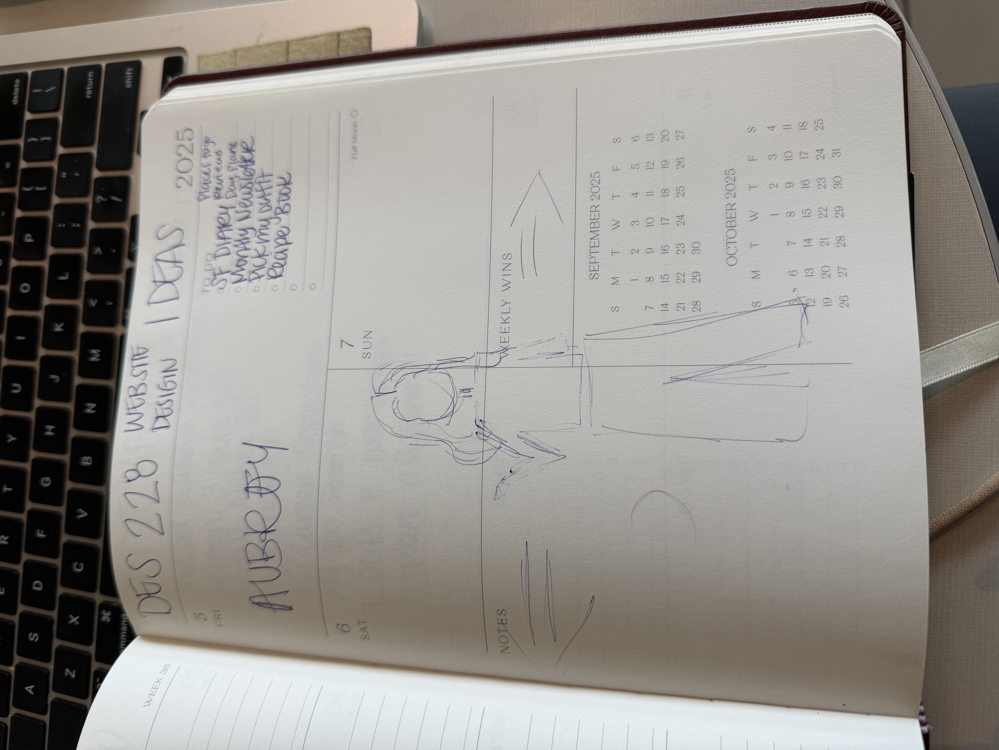

If you dont know me, then probably click off but if you want to stay.
Hii I am Aubrey, I am 22 years old and I just moved to San Fransisco!!
I am from Sunny San Diego which isnt very far but it wayyy different. I came here to go to school at San Fransisco State University.
I enjoy watching the sunset, playing cards with my friends and listening to music. But you all know that.
Here I will be documenting my journey, in any way I feel.
That may be food reviews, journal entries, digital "facetime like" podacts, or photodumps. I have 2 goals for this site to stay connected to the people I love most and document my life.
Life gets busy and its hard to fit calls and updates for all the friends and family in my life.
Also documenting and romanticising my life. A new city in my 20s sounds I am living in the show friends or sex in the city.
So if you are seeing this I love you so much and I miss you more than anything!!

This sketch was from a different idea of a webiste. I swicthed my webiste purpose to the current blog style I have now. The sketch shows a digital mannequin I would use to help pick out my outfits everyday. It also looks so confusing becuase I sketched this on an empty page in my planner.
On my entry page, I included a title, descriptions, and pages that I want to grow with my site. I tried to keep my navigation links simple to describe what I plan to add. I haven't created the separate HTMLs yet to make the links actually work. So the IA is not complete yet. Like mentioned in the article, navigation and IA work hand and hand. I decided the visitor should see an introduction of myself and the goal of the page as the first point of contact. The sketch I created helped me create titles for the navigation pages. Currently, this page feels very unresolved; I am not super proud of this rough draft. The pages aren’t created yet, and I plan to add images and decorate this starting page.